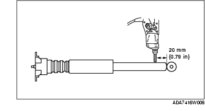

Rear shock absorber disposal
1. Place the shock absorber on a flat surface or with the piston pointing downwards.
2. Drill a 2-3 mm {0.08-0.11 in} hole at the point indicated in the figure so that the gas can escape.

- • Whenever drilling into a shock absorber, wear protective eye wear. The gas in the shock absorber is pressurized, and could spray metal chips into the eyes and face.
3. Turn the hole made in step 2 downwards, and drain the oil by pumping the piston rod up and down several times
4. Cut off the end of the shock absorber.
5. Dispose of waste oil according to the waste disposal law.